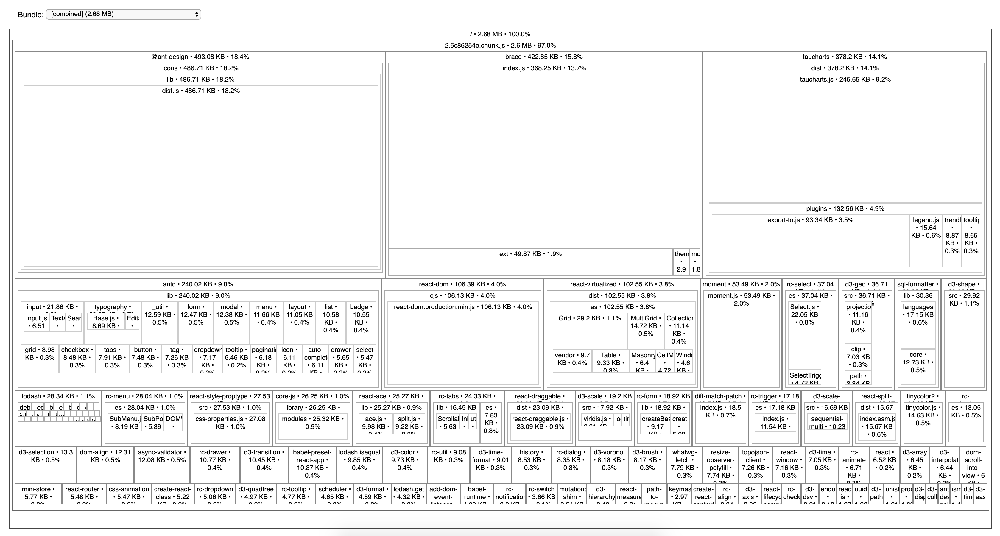

SQLPad 3 has gotten bloated and I'm gonna fight it.
The SQLPad build for upcoming version 3 rework has hit 2.68 MB.

That's minified but uncompressed. Once gzipped Create-React-App says it'll squish down to 723.48 KB, which sounds better but doesn't change the fact it is still 2.68 MB of JS that needs to parse, compile, and execute. SQLPad as become one of those JavaScript apps the Chrome dev relations team tweets and blogs about. (Update 5/17: Actually never mind one of them tweeted that starting with create-react-app is a failure from the start so this whole effort is bogus probably)
I suppose one could argue that bundle size is not that important for an app like SQLPad. The target device is not mobile, and the experience is more of an application where you write SQL and analyze data, not a site where you consume content.
Still, there is opportunity to shave off some larger-than-necessary libraries and be a bit smarter and managing the bundle budget.
Observations
Looking at the above bundle analysis a few things quickly became apparent.
- Adding Antd brought the size up real quick. (antd, icons, and related rc-components account for at least 750 KB of the bundle)
- react-virtualized should be swapped out with react-window
- Moment is fairly large and is overkill for what I am using it for (currently just date formatting)
- SQL formatting doesn't need to happen in the browser - that could become an API call
The Goal
The core SQLPad experience is centered around 2 JavaScript libraries
- Ace editor (422 KB + 25 KB for its React wrapper)
- Taucharts (379 KB + 170 KB for its d3 dependencies)
Because this is a React project, there's also react and react-dom adding another 112 KB.
This puts the core SQLPad project without my code or any of the smaller libraries or component libraries at about 1100 KB.
Before officially publishing SQLPad v3, I'd like to get the bundle size under 1.5 MB uncompressed at a minimum with 1.25 MB as a stretch goal.